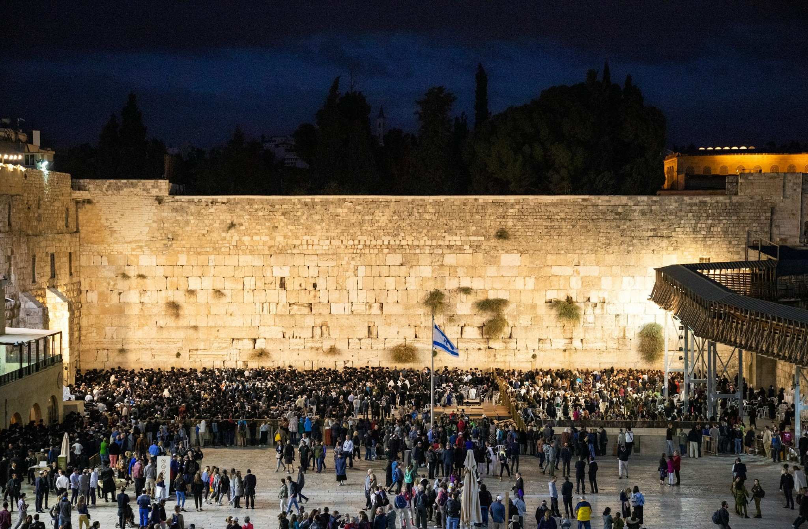
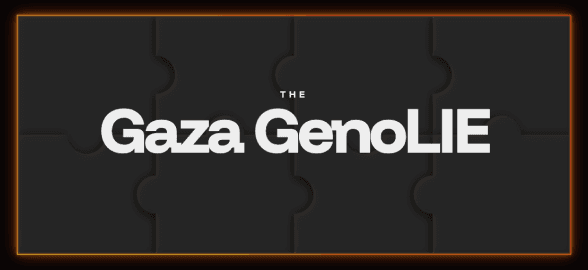
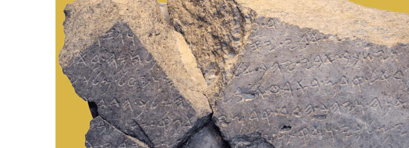

Stojíme za právem Izraele
na existenci a sebeobranu.
Vystupujeme proti antisemitismu. Přinášíme fakta, souvislosti a pohledy,
které v české debatě o Izraeli často chybí.
Doporučujeme
Výběr redakceProzkoumejte témata
Všech 12 témat
Jak vzniká největší lež 21. století?
Gaza GenoLIE sleduje vznik a šíření moderní krvavé pomluvy – obvinění Izraele z genocidy.
Odhalte Gaza GenoLIE
„Obvinění začalo 8. října“
Jedním hlasem je českým partnerem projektu.

Deník
Dagmar Langové Dnes o dívce Núr10. 8. 2026
